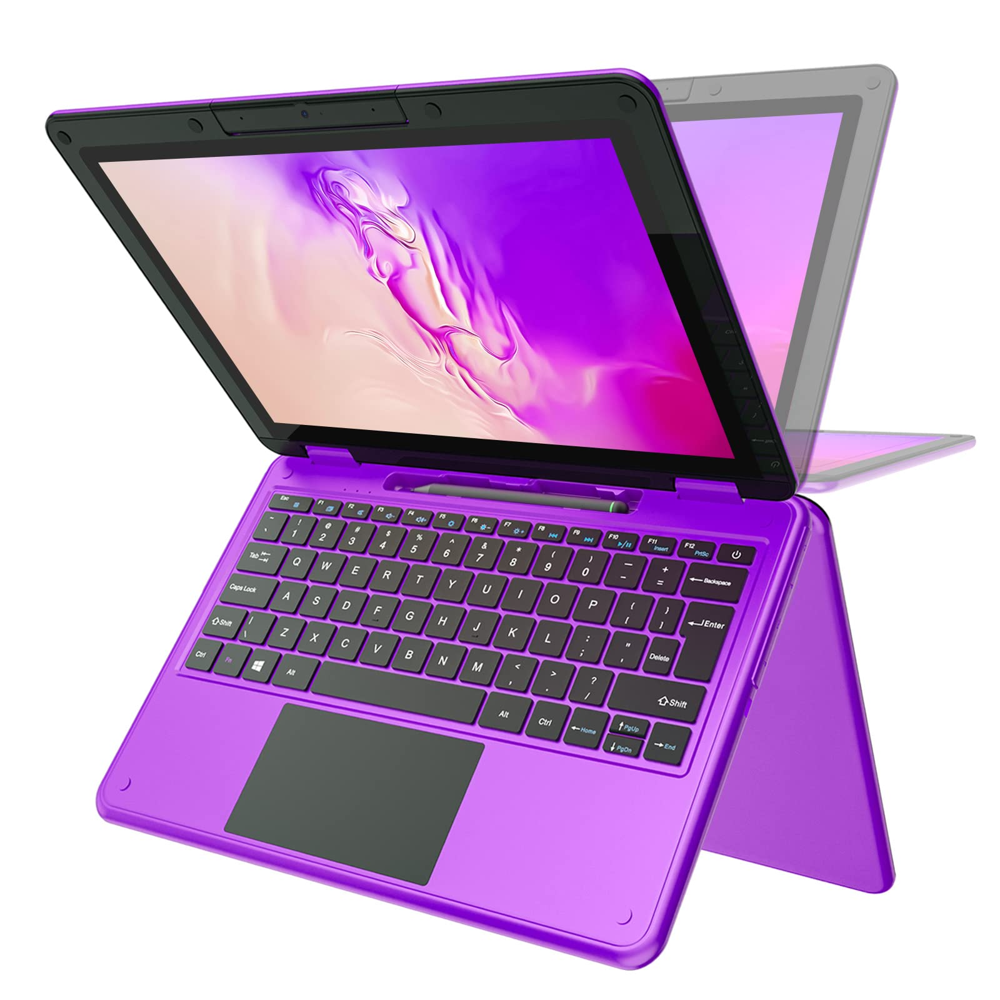

HTML Semântico domina 100% das novas aplicações
Publicado por Larissa Amanda Arantes dos Santos em 06/10/2026

O seu portal diário de inovação, programação e tecnologia web
Publicado por Larissa Amanda Arantes dos Santos em 06/10/2026
